Een overkapping die precies past.
Veranda, tuinkamer of overkapping: bij Tuinmani is alles maatwerk. We meten bij je thuis in tot op de millimeter, laten hem op maat maken en onze eigen monteurs bouwen hem op. Al 25 jaar, met de beste prijsgarantie op maatwerk overkappingen.
Showroom Kayersdijk 95, Apeldoorn. Open op donderdag van 9:00 tot 17:00 en zaterdag van 9:00 tot 16:00.
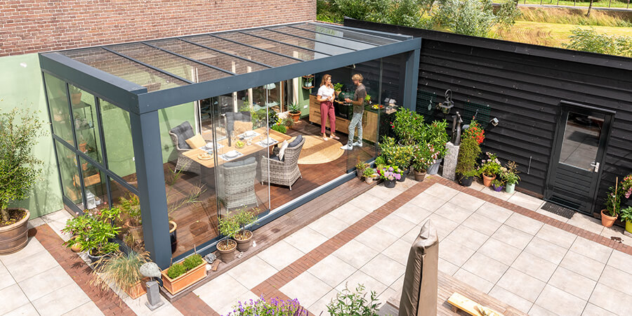
Voor ieder budget een overkapping.
Een overkapping hoeft niet duur te zijn. In de showroom staat het volledige assortiment aluminium veranda's van Verasol, naast Palmiye, onze eigen Tuinmani Edition en houten overkappingen. Dit zijn de Verasol-modellen met hun vanafprijs.
| Model | Vanaf |
|---|---|
| Greenline 3 stijlen, 2 kleuren, glas of polycarbonaat, zelfmontage mogelijk | € 1.149,- |
| Profiline 2 stijlen, 4 kleuren, glas of polycarbonaat | € 1.699,- |
| Cube Glasdak, geen zichtbare dakhelling, tot 7 meter op 2 palen | € 6.999,- |
Vanafprijzen van Verasol, inclusief btw. De definitieve prijs hoort bij jouw maat en opties.
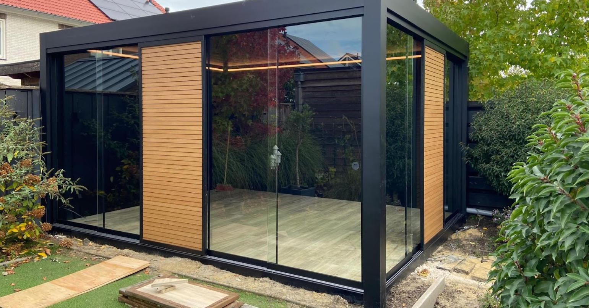
Vrij zicht op je tuin.
De Cube is het paradepaardje van Verasol. Staanders en goot van 250 bij 250 mm maken hem zo sterk dat hij tot zeven meter breed op twee palen rust. Geen paal in het midden, en van buiten zie je geen dakhelling.
- Breedte4000 t/m 7000 mm
- Diepte3000 t/m 4000 mm
- KleurWit of antraciet
- Garantie10 jaar
Stel hem zelf samen.
Kies je kleur, je dak en je wanden. Met voor- en zijwanden maak je van je veranda een tuinkamer waar je van het vroege voorjaar tot in de late herfst zit. In de showroom loop je erdoorheen en zie je hoe het voelt.
- Dak
- Glas, polycarbonaat of lamellen
- Wanden
- Glazen schuifwanden, aluminium kozijn of hout
- Zon
- Screens, onderdakzonwering of allebei
- Licht & warmte
- Ledverlichting en heaters
- Vloer
- Modern of juist landelijk
- Afmeting
- Altijd maatwerk
Ook leverbaar mét inrichting: buitenmeubels en accessoires uit de showroom.
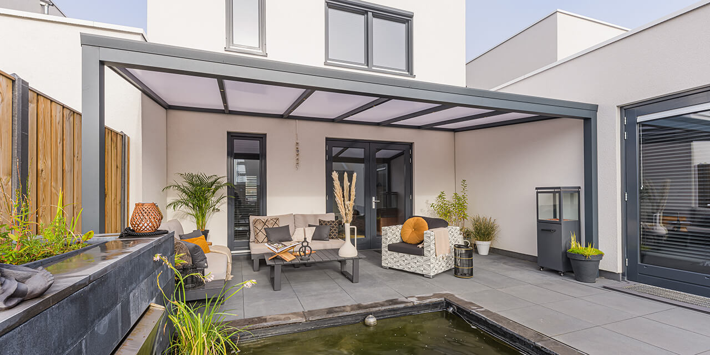
Zo staat het er bij onze klanten.
Echte overkappingen en tuinkamers, ingemeten en gebouwd door ons eigen montageteam.
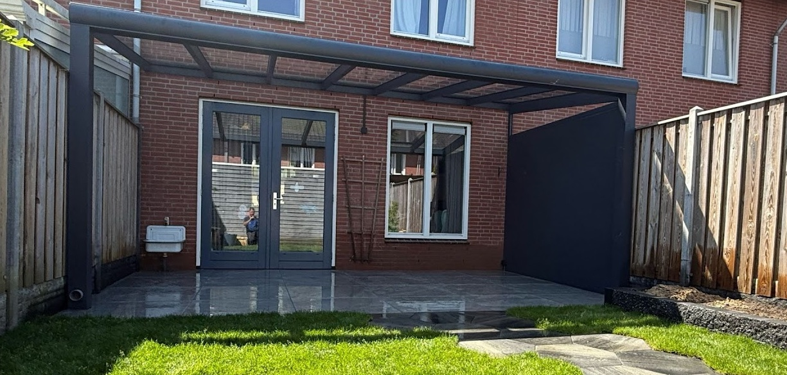
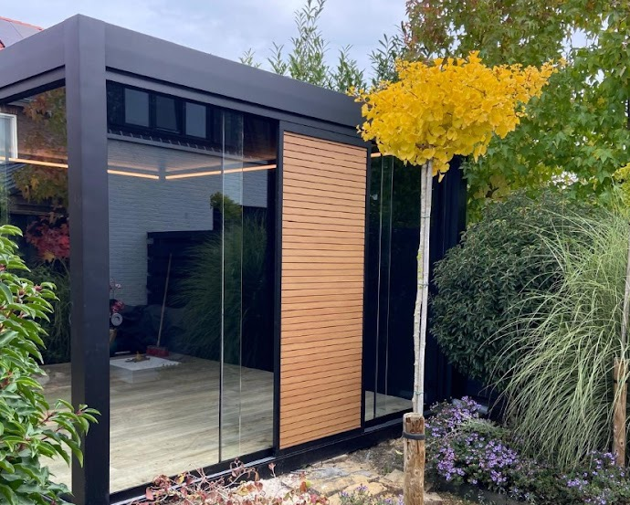
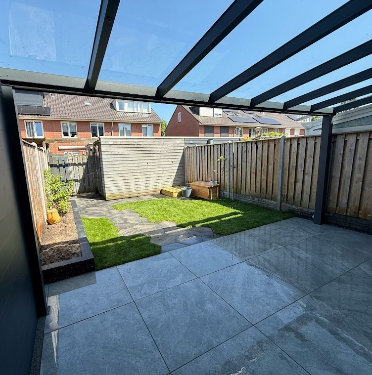
En de rest van je tuin erbij.
Nieuwe bestrating, een stevige schutting, een tuinhuis of zelfs een wellnesshoek: je regelt het in één keer. Onze tuinexperts plaatsen vrijwel alles wat we leveren, van speeltoestellen tot sauna's.
Vraag een offerte voor je tuin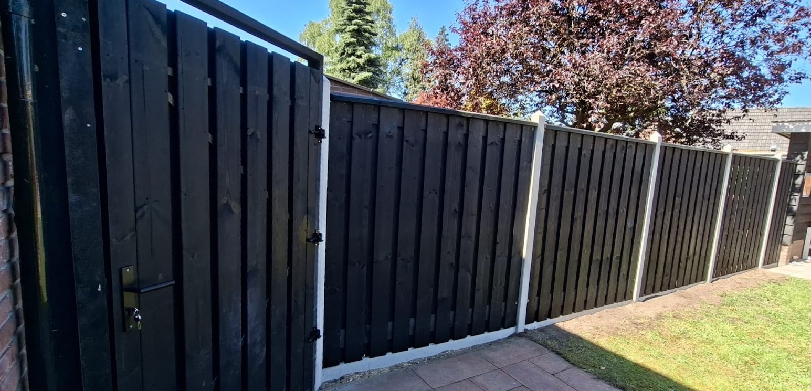
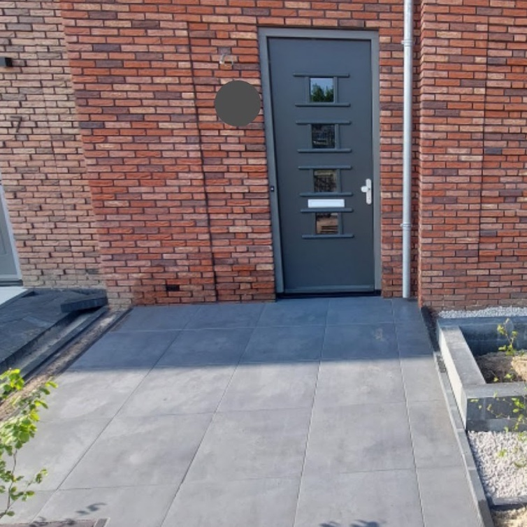
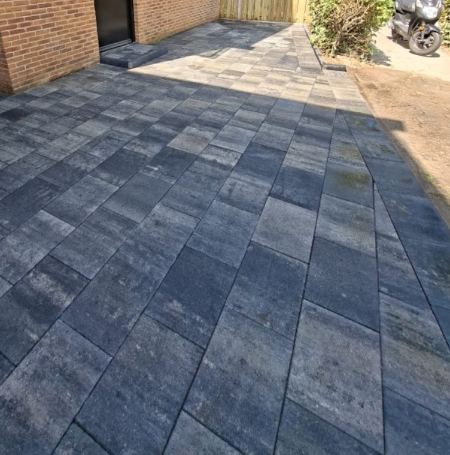
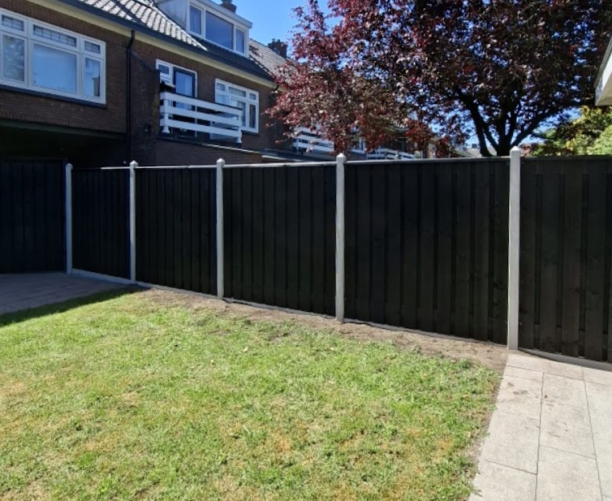
Jouw overkapping in vier stappen.
-
1
Samenstellen in de showroom
Met je adviseur stel je de veranda of tuinkamer samen. Bekijk meteen ook bestrating, schuttingen en wellness.
-
2
Inmeten bij je thuis
We komen langs en meten alles exact in. Daarna krijg je de definitieve offerte ter akkoord.
-
3
Productie op maat
Je overkapping wordt in de fabriek op maat gemaakt. Andere tuinproducten verzamelen we en leveren we mee.
-
4
Montage
Onze eigen vaste monteurs bouwen alles op, ook de bestrating, de schutting en je tuinmeubels.
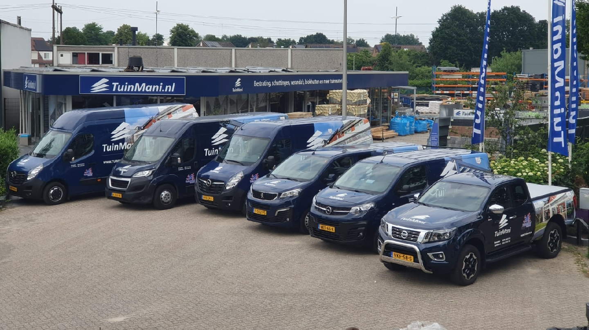
"Met onze eigen ervaren montageteams verzorgen we alles van A tot Z. Jij hoeft alleen nog maar te genieten."
Tuinmani is aangesloten bij een keurmerk en garantiefonds, zodat je zeker weet dat je een betrouwbare aankoop doet.
4,6
gemiddeld uit 15 Google-reviews
"Prachtige showroom!! Vriendelijk personeel, duidelijke communicatie en snelle montage, heel erg blij mee!"
"Goede info, duidelijke uitleg. Mooie voorbeelden. En hebben toegezegd entree rolstoel vriendelijk te maken"
"Erg vriendelijk nam de tijd voor ons .
Helaas wel heel erg prijzig."
Kom langs in de showroom.
Loop door de veranda's en tuinkamers, voel de materialen en stel samen met een adviseur jouw overkapping samen.
Kayersdijk 957332 AM Apeldoorn
| Maandag t/m woensdag | Gesloten |
|---|---|
| Donderdag | 9:00 tot 17:00 |
| Vrijdag | Gesloten |
| Zaterdag | 9:00 tot 16:00 |
| Zondag | Gesloten |
Ook in Deventer: Revalstraat 7, 7418 BJ Deventer, 0570 590 712. Open dinsdag tot en met vrijdag van 9:00 tot 17:00 en zaterdag van 9:00 tot 16:00.
Afspraak of offerte aanvragen
Laat je gegevens achter, dan nemen we zo snel mogelijk contact met je op. Velden met * zijn verplicht.